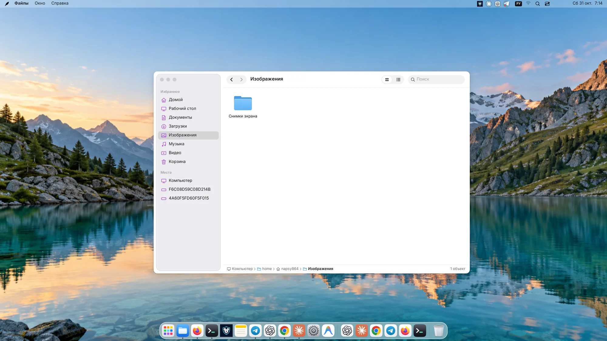
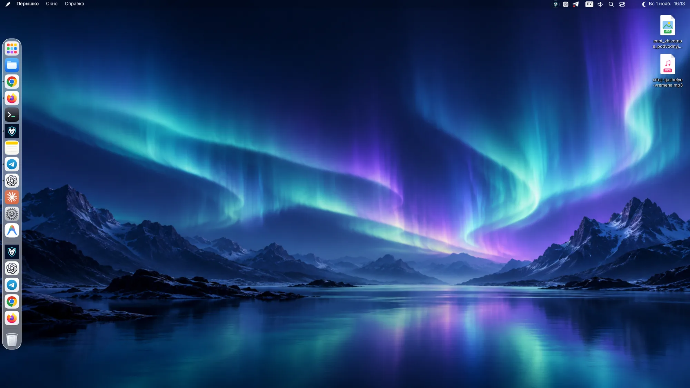
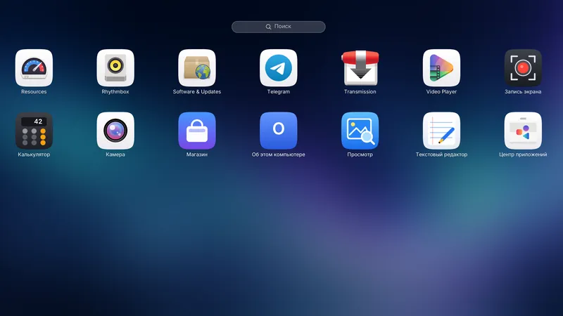
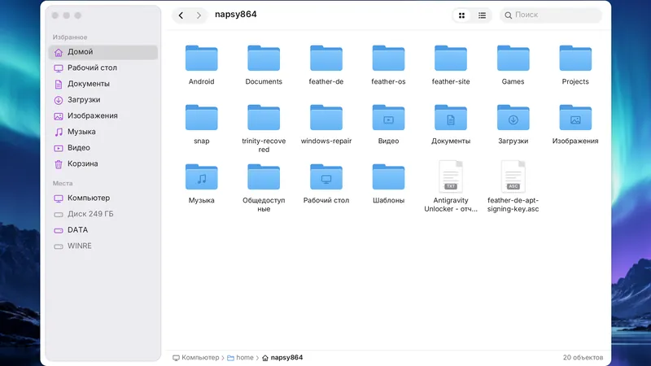
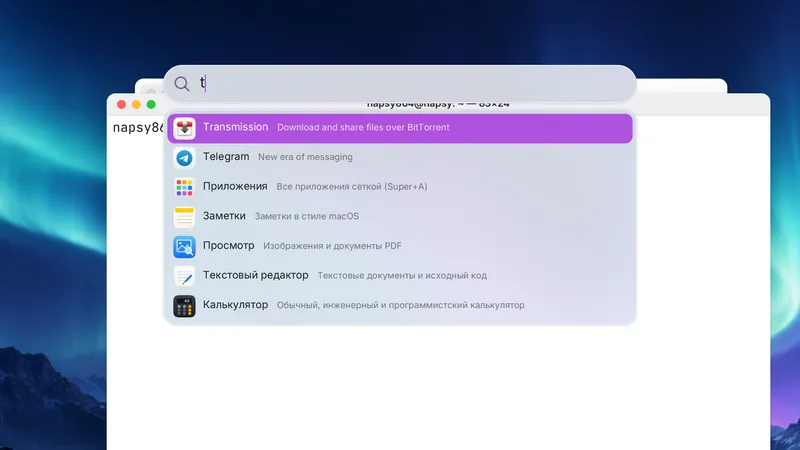
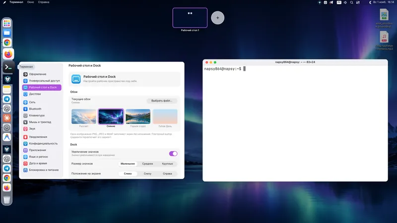
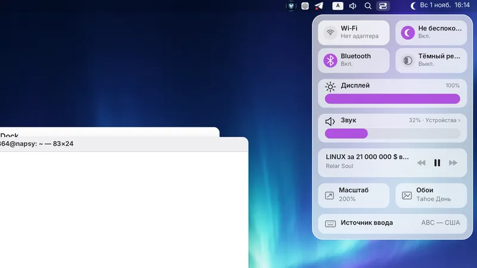
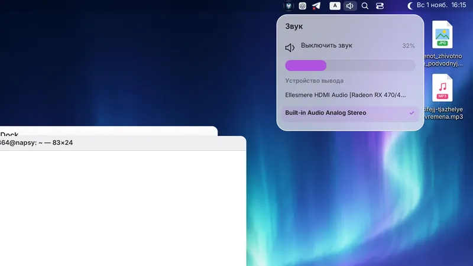
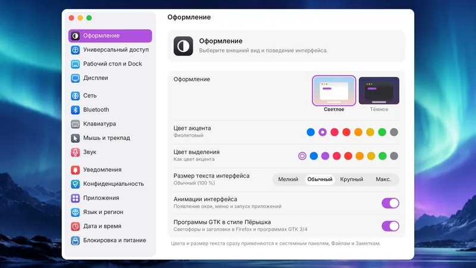
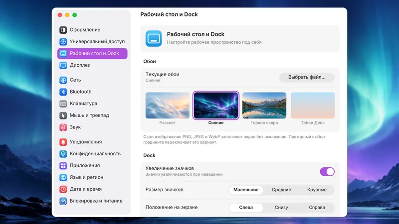

Красивый рабочий стол, который не тормозит
Дистрибутив Linux с рабочим столом в духе macOS: стекло, скругления и пружинные анимации на собственном Wayland-композиторе. Когда вы ничего не делаете, процессор тоже отдыхает: 0 % в простое.
Открытый проект на Rust · Linux x86_64 · UEFI и BIOS

Скорость — это и есть дизайн
Обычно приходится выбирать: красиво или быстро. В Пёрышке у каждой метрики есть бюджет, и любое изменение, которое за него выходит, считается ошибкой.
загрузка процессора в простое: ни таймеров, ни перерисовок «на всякий случай»
работа композитора на кадр, анимации идут на полной частоте экрана
собственной памяти на всю оболочку: меню, Dock, поиск и настройки
кадров в анимации браузера: ввод и сеть работают в фоне и не задерживают кадр
Замеры композитора на 4K-экране с масштабом 200 %. Методика и отчёты — в репозитории.
Всё на своих местах
Не нужно собирать окружение из десятка пакетов: всё уже работает вместе и выглядит как одно целое.
Стекло и скругления
Матовые панели, мягкие тени и скруглённые углы у любых окон, даже у старых программ.
Пружинные анимации
Окна, Dock и панели движутся по физике пружины, а не по таймеру, и всегда точно на частоте экрана.
Dock и Launchpad
Увеличение при наведении, закрепление перетаскиванием, сетка приложений со страницами и поиском.
Spotlight
Программы, открытые окна, настройки, заметки и файлы в одной строке поиска. Плюс быстрые вычисления.
Обзор окон и рабочие столы
Mission Control, до 16 рабочих столов, активные углы и жесты трекпада тремя и четырьмя пальцами.
Пункт управления
Wi-Fi, Bluetooth, звук и яркость в одном месте, плюс системные настройки из 15 разделов.
Глобальное меню
Меню программ Qt, KDE и GTK в верхней строке, системный трей и часы.
Уведомления
Баннеры с действиями, центр уведомлений с группировкой и режим «Не беспокоить» по расписанию.
Для всех
Шесть языков, дробный масштаб и HiDPI, крупный текст, высокий контраст и отключение анимаций.
Окна по местам
Половины и четверти экрана у краёв и по клавишам. Программы открываются там, где вы их закрыли, а после входа возвращается прошлый сеанс.
Буфер обмена и эмодзи
История скопированного хранится только в памяти и обходит помеченные пароли. Панель эмодзи с поиском по-русски и вставкой в один щелчок.
Кофеин
Чашка рядом с часами: пока она включена, компьютер не уснёт и экран не погаснет. На ноутбуках там же батарея с процентами.
Как это выглядит
Настоящие снимки экрана Пёрышка на 4K-мониторе, без ретуши. Нажмите, чтобы рассмотреть подробнее.


Рабочий столСтрока меню, Dock и обои «Сияние»

LaunchpadВсе программы сеткой со страницами и поиском

ФайлыБоковая панель, значки и путь к папке

SpotlightЗапуск программ с клавиатуры

Рабочие столыОбзор окон и переключение столов

Пункт управленияBluetooth, яркость, звук и плеер

ЗвукГромкость и выбор устройства вывода

ОформлениеСветлая и тёмная тема, цвет акцента, размер текста

Рабочий стол и DockОбои, увеличение значков, положение DockСвои приложения в том же стиле
Написаны на Rust вместе с оболочкой, поэтому лёгкие и выглядят как часть системы.
Оригинальные обои
Созданы специально для Пёрышка. Можно поставить и свои: PNG, JPEG или WebP.
Попробуйте Пёрышко
Запишите образ на флешку и загрузитесь: система работает прямо с неё, а установить на диск можно в любой момент.
Пёрышко OS 0.3.2
- На базе Ubuntu 26.04 LTS, обновления обычным
apt upgrade - Живой сеанс без установки и понятный установщик с шифрованием диска
- Офис, браузер, видео, музыка, печать и драйверы уже внутри
- UEFI с Secure Boot и старые компьютеры с BIOS
Контрольная сумма SHA-256d294d15ac42074a70ad51e289f9bdbba985fee4ef9b336d340231b0c321e5135
Уже есть Ubuntu?
- Подходит и для Ubuntu Server без рабочего стола
- Подключает APT-репозиторий: дальше всё обновляется само
- Только оболочка, без набора программ: добавьте
| bash -s -- --minimal
Честно о статусе. Пёрышко — молодой проект в активной разработке. Проверка на разных видеокартах, ноутбуках и мониторах ещё идёт. Если что-то не работает, расскажите об этом в issues на GitHub.
Вопросы и ответы
Что такое Feather OS?
Feather OS (Пёрышко OS) — бесплатный дистрибутив Linux на базе Ubuntu 26.04 LTS. Вместо стандартного окружения Ubuntu в нём собственный рабочий стол Пёрышко: Wayland-композитор и оболочка, написанные на Rust. Офис, браузер, видео, музыка, печать и драйверы уже внутри.
Это macOS? Запустятся ли программы для Mac?
Нет, это Linux. От macOS здесь идеи оформления: Dock, Launchpad, Spotlight, глобальное меню и пункт управления. Программы для macOS не запускаются, работают обычные программы для Linux.
Feather OS бесплатна?
Да. Исходный код открыт под лицензией GPL-3.0: систему можно бесплатно скачать, установить на любое число компьютеров и делиться ею.
Какой нужен компьютер?
64-битный процессор x86_64 и видеокарта с поддержкой OpenGL: эффекты рисует видеокарта, а не процессор. Подходят компьютеры с UEFI и со старым BIOS. По памяти и диску ориентируйтесь на Ubuntu Desktop: от 4 ГБ оперативной памяти и 25 ГБ на диске.
Как установить Feather OS?
Скачайте образ ISO, запишите его на флешку от 4 ГБ программой для записи образов, например balenaEtcher, и загрузитесь с неё. Откроется живой сеанс: систему можно попробовать без установки, а когда понравится — нажать «Установить Пёрышко OS» в Dock.
Можно поставить на уже установленную Ubuntu?
Да, на Ubuntu 24.04 и новее, в том числе на Ubuntu Server без рабочего стола. Достаточно одной команды из раздела «Попробуйте Пёрышко»: она подключит репозиторий и поставит рабочий стол вместе с набором программ.
Как обновляется система?
Через обычный APT: Пёрышко, Firefox и сама Ubuntu обновляются одной командой sudo apt upgrade. Скачивать новый образ для этого не нужно.
Поддержите Пёрышко
Пёрышко бесплатное и открытое и таким останется. Поддержка даёт время на новые возможности и проверку на настоящем железе.
Подписка на Boosty
Ежемесячная поддержка и новости разработки из первых рук: что готовится в следующей версии.
Открыть BoostyРазовый донат
Любая сумма картой любого банка через CloudTips от Т-Банка. Регистрация не нужна.
Поддержать картой